Código: Series de Fourier#
Autovectores de la matriz Laplaciana#
Definición de la matriz Laplaciana a partir de un grafo:
Con \(D\) la matriz diagonal de grados y \(A\) la matriz de adyacencia.
Para un camino de longitud \(n\)
import numpy as np
import matplotlib.pyplot as plt
def laplacian_matrix(n):
"""
Crea una matriz Laplaciana para una cuadrícula 1D de tamaño n.
"""
L = -np.diag(np.ones(n-1), -1) - np.diag(np.ones(n-1), 1) + np.diag(np.ones(n))*2
return L
n = 51
r = np.linalg.eigh(laplacian_matrix(n))
w = np.sqrt(r.eigenvalues)
D = r.eigenvectors
D = D*np.sign(np.diff(D,axis=0)[0,:])
k = 10
plt.stem(w[:k]/w[0])
plt.grid()
plt.title("Primeros k autovalores normalizados")
plt.ylabel("Valor")
plt.figure()
# color cycle viridis
plt.gca().set_prop_cycle(plt.cycler('color', plt.cm.viridis(np.linspace(0,1, k))))
plt.plot(D[:,:k])
plt.title("Primeros k autovectores")
plt.figure()
plt.pcolor(D[:,:k*2])
plt.title("Primeros 2*k autovectores")
plt.show()
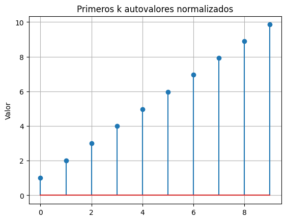
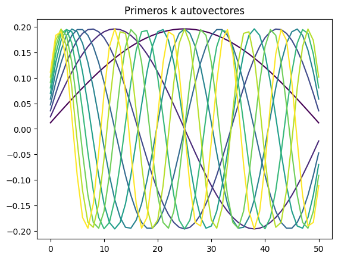
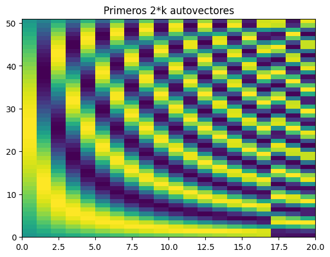
Analicemos una curva triangular con esta base
## Triangulo con vertice en d
d = 10
x = np.r_[np.linspace(0, 1, n-d), np.linspace(1, 0, d)]
D = r.eigenvectors[:,:k*2]
plt.figure()
y = x @ D
plt.stem(y)
z = np.cumsum(y*D,1)
plt.figure()
plt.plot(x,linewidth=2.5, color='k');
# set color gradient cycle
plt.gca().set_prop_cycle(plt.cycler('color', plt.cm.viridis(np.linspace(0, 1, k*2))))
plt.plot(z, alpha=0.5);
# plot de convergencia
plt.figure()
plt.plot(np.linalg.norm(np.cumsum(y*D,1).T-x,axis=1), linewidth=2.5, color='k');
plt.xlabel("Número de componentes")
plt.ylabel("Error");
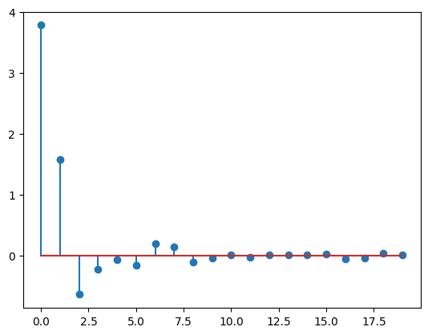
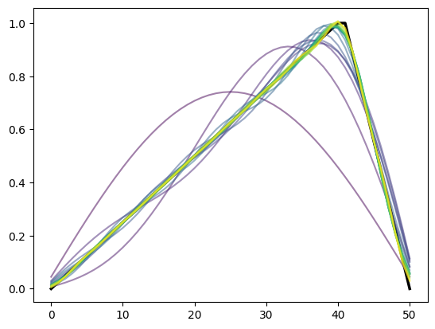
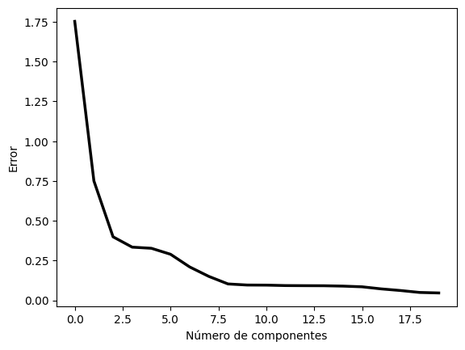
Si realizamos el mismo procedimiento para un grafo cíclico de longitud \(n\) obtenemos una matriz similar cuyos autovectores ahora son senos y cosenos.
# laplacian with cyclic condition
def laplacian_matrix_cyclic(n):
"""
Crea una matriz Laplaciana para una cuadrícula 1D de tamaño n con condiciones cíclicas.
"""
L = -np.diag(np.ones(n-1), -1) - np.diag(np.ones(n-1), 1) + np.diag(np.ones(n))*2
L[0, -1] = -1
L[-1, 0] = -1
return L
n = 501
r = np.linalg.eigh(laplacian_matrix_cyclic(n))
D = r.eigenvectors
D = D*np.sign(np.diff(D,axis=0)[0,:])
w = np.sqrt(np.abs(r.eigenvalues*n))
argix = np.argsort(w)
w = w[argix]
k = 8
plt.figure()
plt.stem(w[:k]/w[1])
plt.grid()
plt.title("Primeros autovalores normalizados")
plt.figure()
# style cycle alternate - and --
plt.gca().set_prop_cycle(plt.cycler('linestyle', ['-']+['-', '--']*10) +
plt.cycler('color',np.r_[[[0,0,0,1]],plt.cm.tab10(np.repeat(np.arange(10), 2))]))
plt.plot(D[:,:5])
plt.title("Primeros autovectores")
plt.figure()
plt.pcolor(D[:,:k*2])
plt.colorbar()
plt.title("Primeros autovectores")
print("Norma de los autovectores todos 1", np.allclose(np.linalg.norm(D,axis=0),1))
Norma de los autovectores todos 1 True
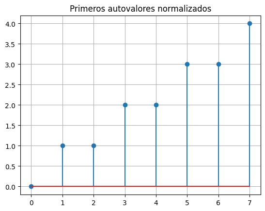
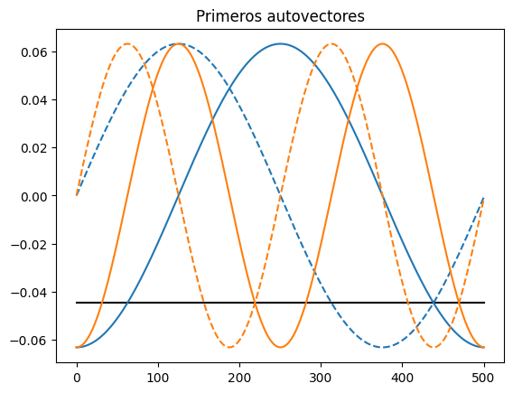
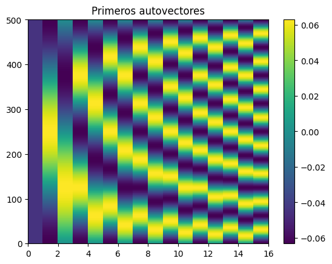
Ahora podemos proyectar curvas que no tengan los extremos fijos.
# Dibuja una onda cuadrada un ciclo
x = np.zeros(n)
x[0:n//2] = 1
x[n//2:] = -1
# Proyecta sobre los autovectores
D = r.eigenvectors
y = x @ D
k = 20
z = np.cumsum(y[:k]*D[:,:k],1)
plt.figure()
plt.stem(y[:k*2])
plt.title("Proyección de la onda cuadrada sobre los autovectores")
plt.figure()
plt.plot(x, ".", color='k', zorder=10, markersize=5);
# set color gradient cycle
plt.gca().set_prop_cycle(plt.cycler('color', plt.cm.viridis(np.linspace(0, 1, k))))
plt.plot(z, alpha=0.5);
plt.figure()
plt.plot(np.linalg.norm(z.T-x,axis=1), linewidth=2.5, color='k');
plt.ylabel("Error");
plt.xlabel("Número de componentes");
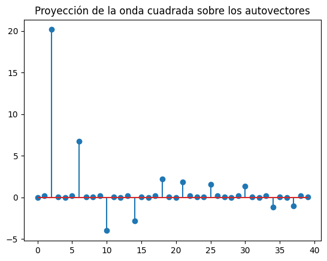
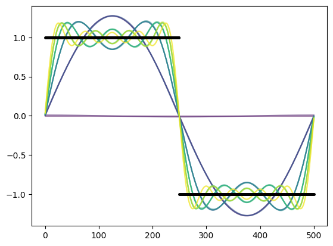
Repetimos el procedimiento, pero construyendo una matriz explicitamente con senos y cosenos. Para no depender del calculo de autovectores.
def generar_base_fourier(n, armonicos):
"""
Generar una base de Fourier con senos y cosenos
Parámetros:Parámetros:
n: Número de puntos de muestra
armonicos: Número de armónicos a incluir
Retorna:
F: Matriz donde las columnas son las funciones base de Fourier
"""
# Crear puntos de muestra en [0, 2π)rear puntos de muestra en [0, 2π)
x = np.linspace(0, 2*np.pi, n, endpoint=False)
# Inicializar la matriz base de Fourier# Inicializar la matriz base de Fourier
F = np.ones((n, 1 + 2*armonicos))
# Primera columna es el término constante (componente DC)# Primera columna es el término constante (componente DC)
F[:, 0] = 1.0 / np.sqrt(n)
# Llenar el resto con senos y cosenos# Llenar el resto con senos y cosenos
for k in range(1, armonicos + 1):
# Base de coseno (normalizada))
F[:, 2*k-1] = np.sqrt(2/n) * np.cos(k * x)
# Base de seno (normalizada)
F[:, 2*k] = np.sqrt(2/n) * np.sin(k * x)
return F
# Generar la base de Fourier
n = 512
k = 25
F = generar_base_fourier(n, k)
plt.figure()
plt.gca().set_prop_cycle(plt.cycler('linestyle', ['-']+['-', '--']*10) +
plt.cycler('color',np.r_[[[0,0,0,1]],plt.cm.tab10(np.repeat(np.arange(10), 2))]))
plt.plot(F[:, :5])
plt.title("Base de Fourier")
plt.figure()
plt.pcolor(F[:, :10])
plt.colorbar()
plt.title("Base de Fourier");
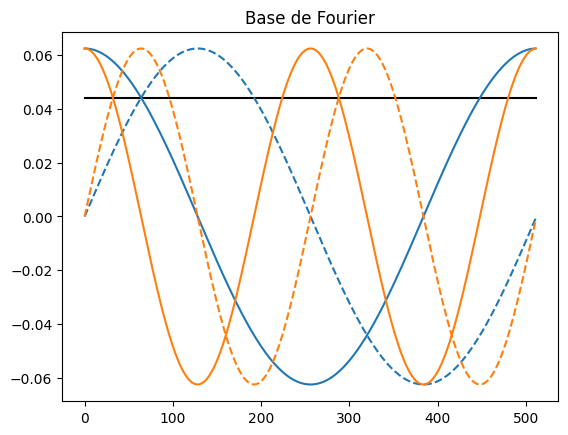
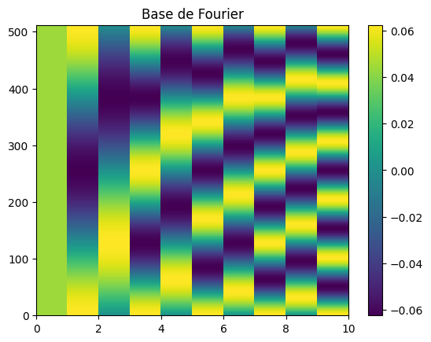
x = np.zeros(n)
x[0:n//2] = 1
x[n//2:] = -1
# Proyecta sobre los autovectores
y = x @ F
k = 20
z = np.cumsum(y[:k]*F[:,:k],1)
plt.figure()
plt.stem(y)
plt.title("Proyección de la onda cuadrada sobre los autovectores");
plt.figure()
plt.plot(x, ".", color='k', zorder=10, markersize=5);
# set color gradient cycle
plt.gca().set_prop_cycle(plt.cycler('color', plt.cm.viridis(np.linspace(0, 1, k))))
plt.plot(z, alpha=0.5);
plt.title("Aproximación de la onda cuadrada con Fourier");
plt.figure()
plt.plot(np.linalg.norm(z.T-x,axis=1), linewidth=2.5, color='k');
plt.ylabel("Error")
plt.xlabel("Número de componentes");
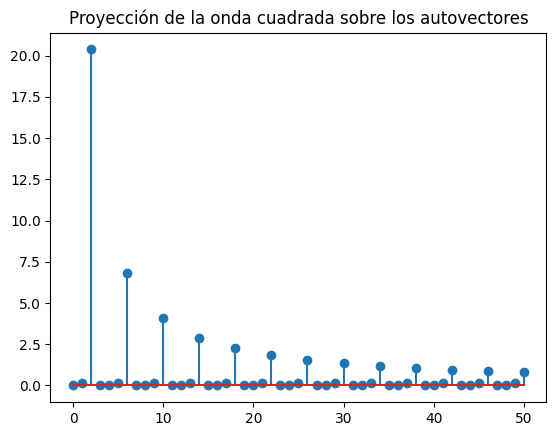
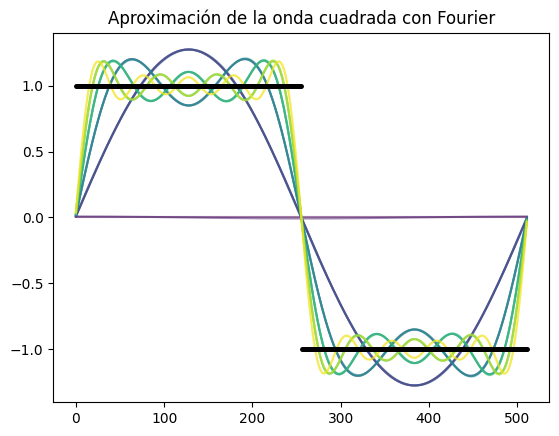
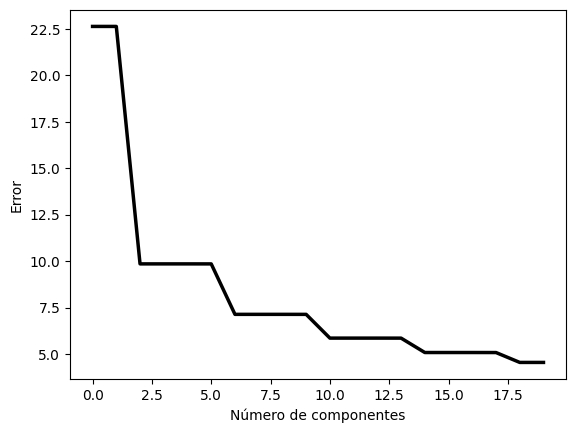